Kachel: bestanden, Kern 2 Der ausgesprochene Satz ist nicht erkennbar.
abgelegtes Bild: bestanden, 5 Punkte, Kern 1 Jesu Antwort, dass seine Stunde noch nicht gekommen sei, ist nicht erkennbar; auch die Szene bleibt nur vermutet.
Blind: The woman gestures toward the man as they look at one another across a table. Three faint figures are gathered in the background. – Possibly the wedding at Cana, specifically Mary telling Jesus that the wine has run out. The image does not establish the story or exact moment definitively.
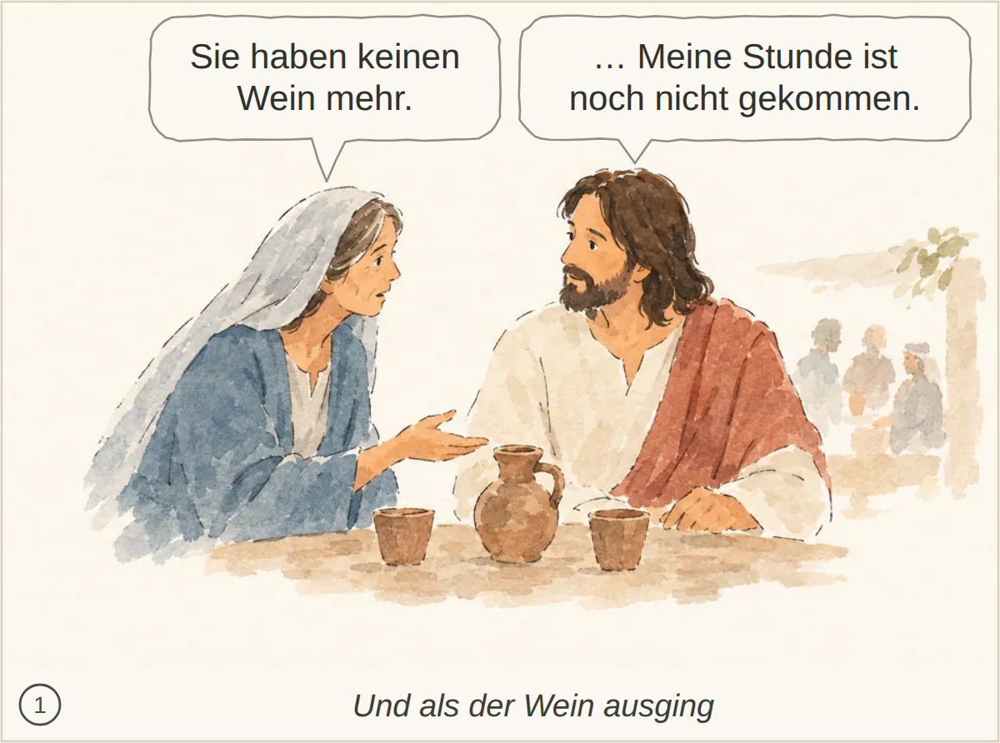
Kachel: bestanden, Kern 2
abgelegtes Bild: bestanden, 7 Punkte, Kern 2 Der Glaube der Jünger wird nicht ausdrücklich erwähnt.
Blind: An older man holding a cup gestures toward a flower-crowned man. The others stand nearby and watch. – Possibly the wedding at Cana, specifically the moment when the master of the banquet speaks to the bridegroom after tasting the wine, in John 2:9–10. The identification is uncertain from the picture alone.
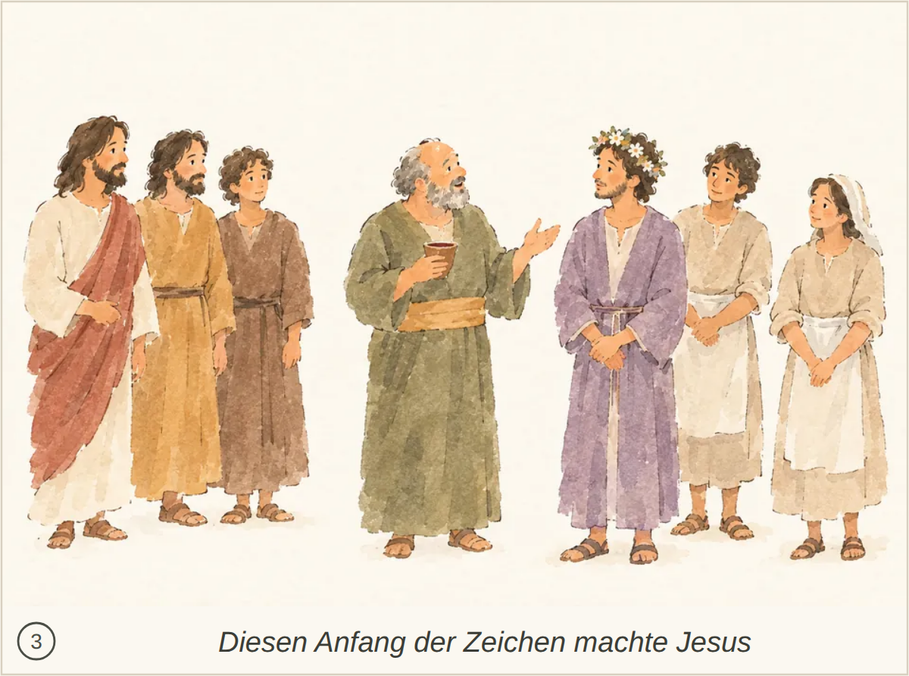
Kachel: durchgefallen, Kern 2 Das Lob des guten Weins und der Glaube der Jünger werden nicht ausdrücklich genannt.
abgelegtes Bild: bestanden, 6 Punkte, Kern 2 Der genaue Ausspruch Jesu ist nicht erkennbar.
Blind: A man raises a whip as two men with birdcages recoil from him. A table tips over and coins scatter, while a bovine and a sheep move to the right. – Jesus cleansing the Temple: the moment he drives out the sellers and overturns a money changer's table.
Kachel: bestanden, Kern 2 Der ausgesprochene Satz ist nicht erkennbar.
abgelegtes Bild: bestanden, 5 Punkte, Kern 1 Das Gespräch passt, aber die Frage nach einem Zeichen und Jesu Aussage über den Tempel seines Leibes sind nicht eindeutig erkennbar.
Blind: Three men face a fourth man across an open space. One of the three gestures toward him, while he holds a hand to his chest; distant figures stand or move among the buildings. – It may depict Jesus speaking with religious leaders near the temple, but the image does not identify a particular Bible episode or exact moment.
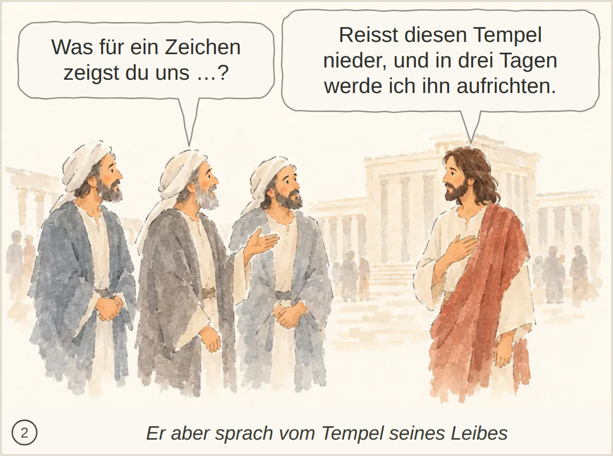
Kachel: bestanden, Kern 2 Nichts Wesentliches; die spätere Erinnerung und der Glaube der Jünger sind nicht dargestellt.
abgelegtes Bild: durchgefallen, 4 Punkte, Kern 1 Die begeisterte Menge und der abgewandte Jesus passen teilweise. Die Zeichen, der darauf beruhende Glaube und Jesu Wissen um das Innere der Menschen sind nicht erkennbar; sein fehlendes Vertrauen bleibt unklar.
Blind: A group of people on the left lean and gesture toward a robed man on the right. He turns his head back toward them, while other figures stand or move in the distance. – The robed, bearded man may represent Jesus being approached by a crowd, but the visible details do not identify a particular Bible story or exact moment with confidence.

Kachel: bestanden, Kern 1 Die Zeichen, aufgrund derer viele glauben, und Jesu Zurückhaltung, sich ihnen anzuvertrauen, werden nicht erkennbar.
abgelegtes Bild: durchgefallen, 4 Punkte, Kern 1 Das Schöpfen und Bringen zum Speisemeister sowie Jesu entsprechende Anweisung fehlen.
Blind: Two people pour water from pitchers into large jars while two others hold pitchers nearby. The woman on the left and the bearded man on the right gesture toward the group. – Likely the wedding at Cana, at the moment servants fill the six jars with water at Jesus' direction, before the water is turned into wine.
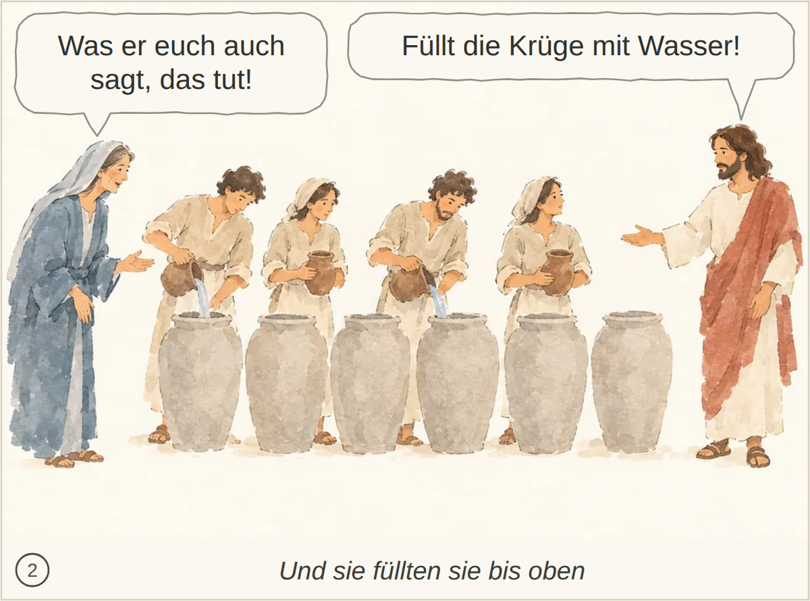
Kachel: bestanden, Kern 1 Das anschließende Schöpfen und Bringen zum Speisemeister wird nicht gezeigt oder erwähnt.
abgelegtes Bild: bestanden, 4 Punkte, Kern 1 Passa in Jerusalem, die gesehenen Zeichen und der daraus entstandene Glaube sind nicht erkennbar. Auch Jesu Zurückhaltung und sein Wissen über die Menschen bleiben unklar.
Blind: A group on the left looks toward a robed man standing apart on the right, while one man points at him. The man on the right turns his head back toward the group. – The man on the right may represent Jesus with a group of followers, but the image does not establish a particular Bible story or exact moment.
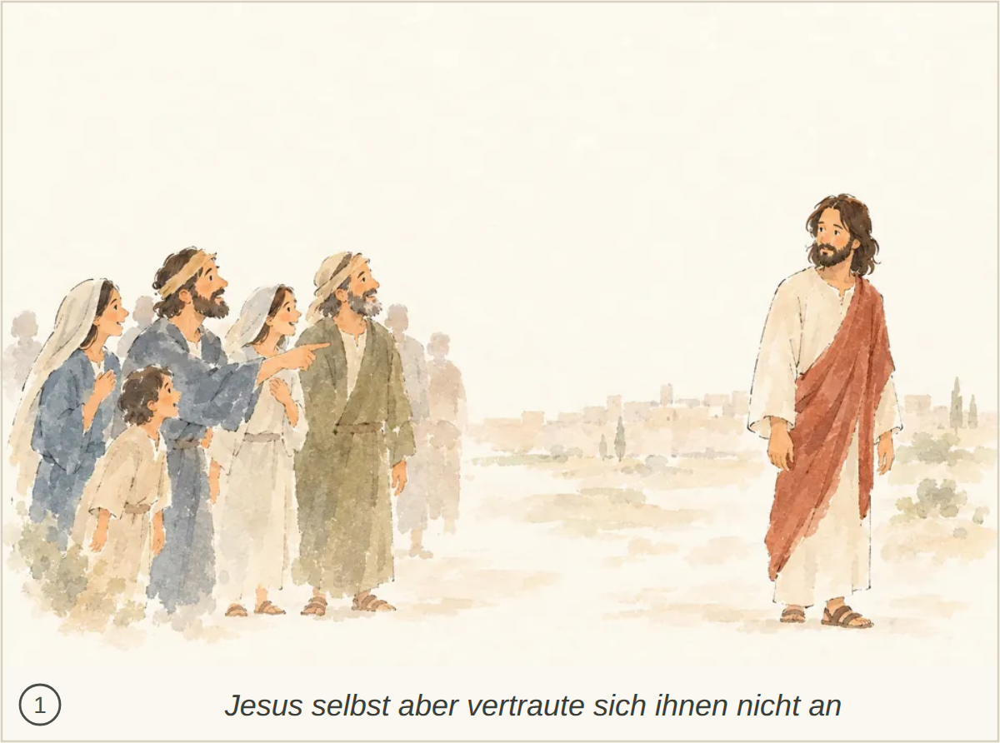
Kachel: bestanden, Kern 1 Die Zeichen als Grund für den Glauben und Jesu Wissen um das Innere der Menschen fehlen; auch Passa und Jerusalem werden nicht genannt.
abgelegtes Bild: bestanden, 5 Punkte, Kern 2 Das Kissen wird nicht erwähnt.
Blind: A boat is being tossed by large waves while several men brace themselves and look concerned. One reaches toward a man lying with his eyes closed at the other end of the boat. – Likely Jesus asleep during the storm on the Sea of Galilee, at the moment the disciples are trying to wake him, before he calms the storm.
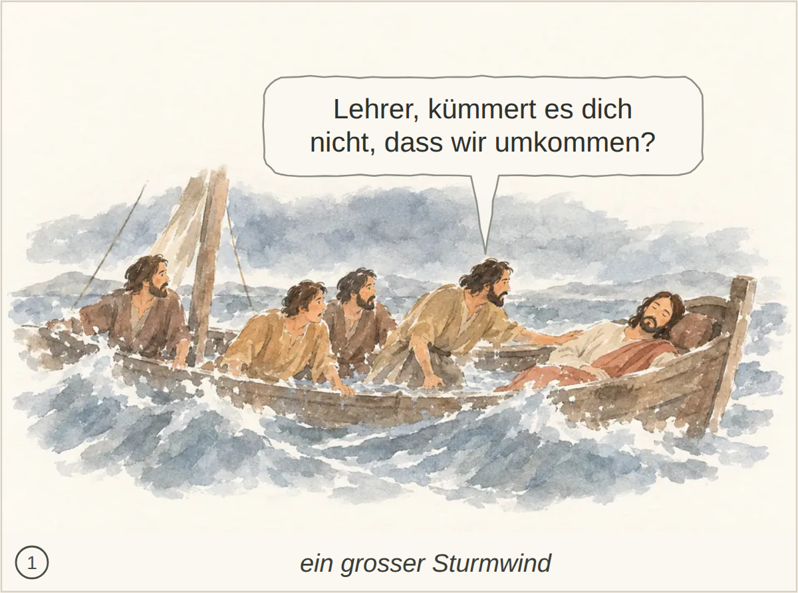
Kachel: bestanden, Kern 2 Nichts Wesentliches fehlt.
abgelegtes Bild: bestanden, 6 Punkte, Kern 2 Das Nachlassen des Windes und die grosse Stille sind nicht ausdrücklich beschrieben.
Blind: Three men are in a boat on the water. The standing man extends his hand toward the water while the other two watch him; waves are visible beside the boat. – Possibly Jesus calming the storm, at the moment he commands the wind and water to be still; the image does not establish the story conclusively.
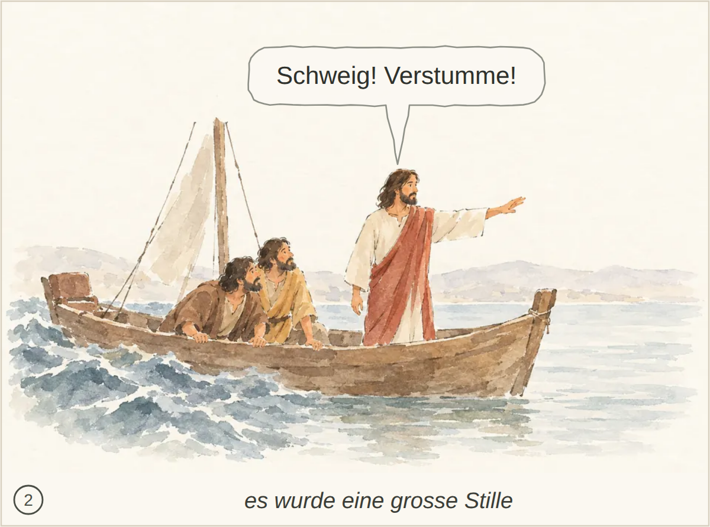
Kachel: bestanden, Kern 2
abgelegtes Bild: bestanden, 3 Punkte, Kern 1 Seine Umkehr, der Entschluss zur Rückkehr und das Schuldbekenntnis gegenüber dem Vater fehlen.
Blind: A man sits beside a trough while three pigs eat from it. He looks upward rather than at the animals. – This may depict the prodigal son tending pigs during the famine, the moment when he is hungry enough to long for their food.
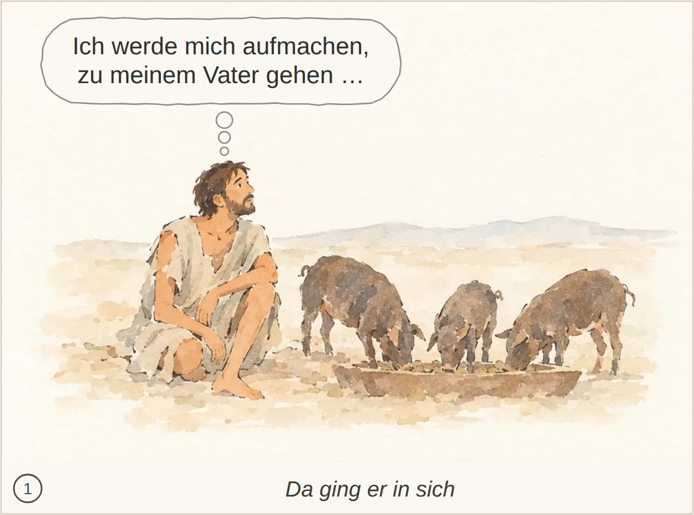
Kachel: bestanden, Kern 2 Das ausdrückliche Schuldbekenntnis wird nicht erwähnt.
abgelegtes Bild: bestanden, 5 Punkte, Kern 2 Kuss, Schuldbekenntnis und die Anordnung zu Gewand, Ring, Sandalen und Mastkalb sind nicht erkennbar.
Blind: An older man embraces a bowed younger man, holding his shoulders. A distant figure carries a piece of brown fabric near the building. – Possibly the parable of the prodigal son, at the moment the father welcomes his son home.
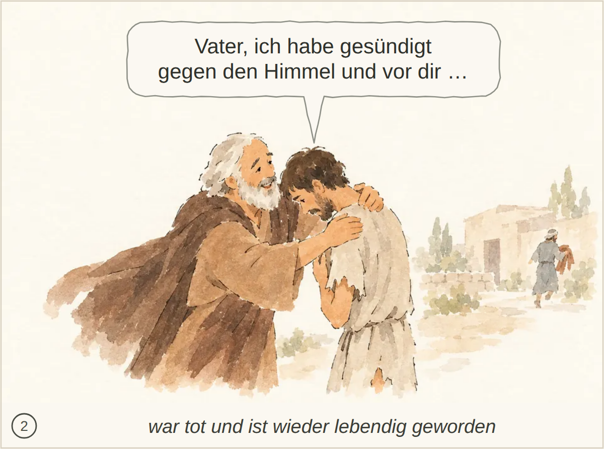
Kachel: bestanden, Kern 2 Der Kuss und die Anweisungen zu Gewand, Ring, Sandalen und Mastkalb werden nicht ausdrücklich gezeigt.
abgelegtes Bild: bestanden, 4 Punkte, Kern 2 Nichts Wesentliches; der konkrete Wortlaut ist bildlich nicht erkennbar.
Blind: An older man reaches toward a younger man and gestures as if appealing to him. The younger man folds his arms and looks away, while small figures appear to celebrate inside the building. – Possibly the parable of the prodigal son: the father appeals to the angry elder son outside while the celebration for the younger son's return takes place inside.
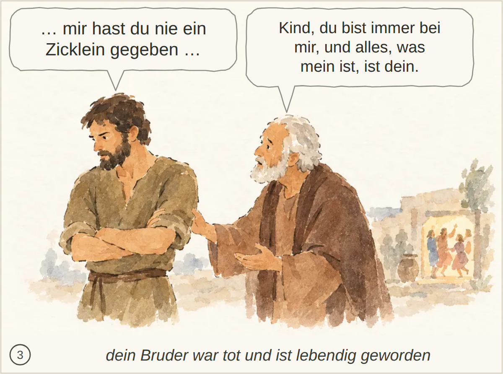
Kachel: bestanden, Kern 2 Nichts Wesentliches; der genaue Wortlaut des Gesprächs ist nicht erkennbar.
abgelegtes Bild: bestanden, 3 Punkte, Kern 1 Die Furcht der Jünger und ihr Erstaunen darüber, dass Wind und See Jesus gehorchen, sind nicht eindeutig erkennbar.
Blind: A man seated at one end of a boat gestures toward three other men. One covers his mouth, while the other two lean toward each other. – Possibly Jesus speaking to his disciples in a boat, perhaps when he warns them about the leaven of the Pharisees and they discuss having no bread. The exact story and moment cannot be established from the picture alone.
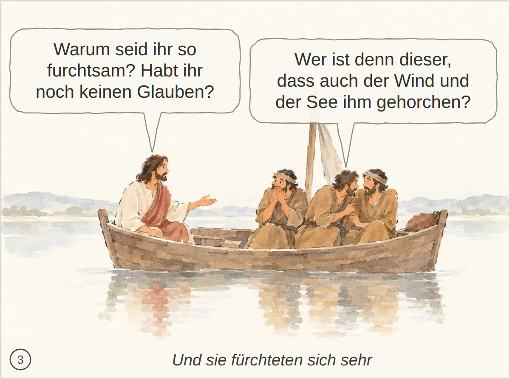
Kachel: bestanden, Kern 2 Nichts Wesentliches fehlt.